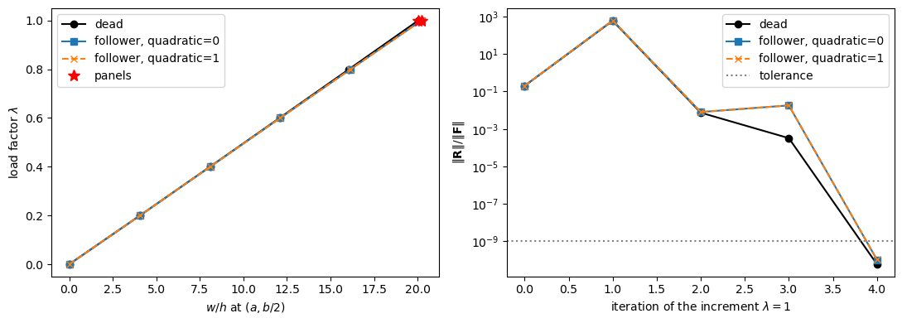
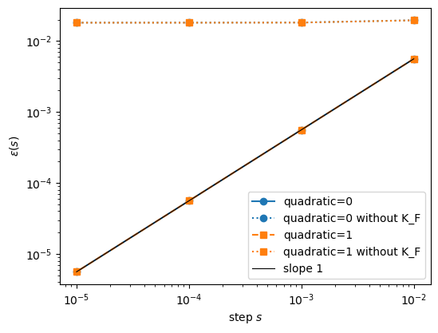

Follower pressure#
A follower pressure stays normal to the deformed mid-surface and acts on its deformed area. This example computes, with update_fext_follower and update_KCfollower:
the large deflection of a cantilever plate under a dead and a follower pressure, with both truncations of the area vector, against reference values of the plate_clpt_donnell model of panels;
the tangent stiffness matrix with the load stiffness matrix against central finite differences of the residual;
the asymmetry of the load stiffness matrix for several boundary conditions and pressures.
The same models are checked in tests/test_follower_pressure.py.
Theory#
A pressure of a gas or a liquid stays normal to the deformed plate and acts on its deformed area, as opposed to a dead pressure, which keeps the direction \(z\) and the undeformed area; its force vector depends on the displacements, and its derivative, the load stiffness matrix, enters the tangent stiffness matrix [1, 2]. With \(\boldsymbol{X} = \boldsymbol{X}_0 + \boldsymbol{u}\) the deformed position of the mid-surface, the virtual work of the pressure \(p\), given per unit undeformed area, is
The area vector splits by orders in the displacement gradients, \(\boldsymbol{a} = \boldsymbol{a}_0 + \boldsymbol{a}_1 + \boldsymbol{a}_2\),
With the moderate rotations of the von Kármán strains, the first-order area vector \(\boldsymbol{a}_0 + \boldsymbol{a}_1\) (quadratic=0) is the consistent truncation: the force vector is affine in the displacements and the load stiffness matrix constant. quadratic=1 keeps \(\boldsymbol{a}_2\). Discretised with the rows \(\boldsymbol{S}^u\), \(\boldsymbol{S}^v\), \(\boldsymbol{S}^w\) of the element, the force vector of update_fext_follower and the load stiffness
matrix of update_KCfollower are
At \(\boldsymbol{u} = \boldsymbol{0}\), \(\boldsymbol{F}_p(\boldsymbol{0}) = \int_A p (\boldsymbol{S}^w)^\top dA\) is the force vector of the dead pressure; reference=0 gives \(\boldsymbol{F}_p(\boldsymbol{u}) - \boldsymbol{F}_p(\boldsymbol{0})\). The residual of the nonlinear static analysis under the pressure \(\lambda p\) and its Jacobian are
[1]:
%matplotlib inline
import numpy as np
from numpy import isclose
import matplotlib.pyplot as plt
from scipy.sparse import coo_matrix
from scipy.sparse.linalg import spsolve
from composites import isotropic_plate, laminated_plate
from bfscplate2d import (BFSCPlate2D, update_KC0, update_KCNL, update_KG,
update_fint, update_fext_follower, update_KCfollower, DOF, DOUBLE,
INT, KC0_SPARSE_SIZE, KCNL_SPARSE_SIZE, KG_SPARSE_SIZE,
KCfollower_SPARSE_SIZE)
from bfscplate2d.quadrature import get_points_weights
Mesh helper#
A helper class builds a rectangular mesh of \(n_x\) by \(n_y\) nodes and assembles the force vector of the follower pressure, the load stiffness matrix \(\boldsymbol{K}_F\), the internal forces \(\boldsymbol{F}_{int}\) and the tangent stiffness matrix without the load, \(\boldsymbol{K}_{C0} + \boldsymbol{K}_{CNL} + \boldsymbol{K}_{GNL} +
\boldsymbol{K}_G\). The method pressure gives the array p of each element at its integration points. Six integration points per direction integrate exactly the complete area vector with a pressure of degree 2. The default laminate, \([30/-45/0/90]\), is unsymmetric and unbalanced, such that \(A_{16}\), \(A_{26}\) and \(\boldsymbol{B}\) are non-zero, and the default pressure p_function varies over the plate; they are used in the checks of the tangent and of the
symmetry. boundary_flags constrains, along an edge, a displacement and its derivative along the edge, and asym is the asymmetry measure \(\|\boldsymbol{K} - \boldsymbol{K}^\top\| /
\|\boldsymbol{K}\|\).
[2]:
NINT = 6
TRUNCATIONS = [0, 1]
LAMINAPROP = (142.5e9, 142.5e9/20, 0.25, 0.5*142.5e9/20, 0.5*142.5e9/20,
0.5*142.5e9/20)
LAMINATE = laminated_plate(stack=[30, -45, 0, 90], laminaprop=LAMINAPROP,
plyt=0.125e-3)
A, B = 0.3, 0.2
def p_function(x, y):
"""Non-uniform pressure, of degree 2"""
return 1.e4*(1 + x/A - 2*y**2/B**2)
class Mesh(object):
"""Rectangular mesh of ``nx`` by ``ny`` nodes over ``a`` by ``b``, with
the assembly of the vectors and matrices used below"""
def __init__(self, nx=4, ny=3, a=A, b=B, lam=LAMINATE, nint=NINT):
self.a, self.b = a, b
self.points, self.weights = get_points_weights(nint=nint)
xlin = np.linspace(0, a, nx)
ylin = np.linspace(0, b, ny)
xmesh, ymesh = np.meshgrid(xlin, ylin)
ncoords = np.vstack((xmesh.T.flatten(), ymesh.T.flatten())).T
self.x = ncoords[:, 0]
self.y = ncoords[:, 1]
nids_mesh = np.arange(nx*ny).reshape(nx, ny)
n1s = nids_mesh[:-1, :-1].flatten()
n2s = nids_mesh[1:, :-1].flatten()
n3s = nids_mesh[1:, 1:].flatten()
n4s = nids_mesh[:-1, 1:].flatten()
self.N = DOF*nx*ny
self.elements = []
for k, (n1, n2, n3, n4) in enumerate(zip(n1s, n2s, n3s, n4s)):
plate = BFSCPlate2D()
plate.n1, plate.n2, plate.n3, plate.n4 = n1, n2, n3, n4
plate.c1 = DOF*n1
plate.c2 = DOF*n2
plate.c3 = DOF*n3
plate.c4 = DOF*n4
plate.ABD = lam.ABD
plate.lex = a/(nx - 1)
plate.ley = b/(ny - 1)
plate.init_k_KC0 = k*KC0_SPARSE_SIZE
plate.init_k_KCNL = k*KCNL_SPARSE_SIZE
plate.init_k_KG = k*KG_SPARSE_SIZE
plate.init_k_KCfollower = k*KCfollower_SPARSE_SIZE
self.elements.append(plate)
self.h = lam.h
def pressure(self, plate, func):
"""``p[i, j]`` at ``xi = points[i]``, ``eta = points[j]``"""
x1, y1 = self.x[plate.n1], self.y[plate.n1]
x = x1 + plate.lex*(self.points + 1)/2
y = y1 + plate.ley*(self.points + 1)/2
p = func(x[:, None], y[None, :])*np.ones((x.size, y.size))
return np.ascontiguousarray(p, dtype=DOUBLE)
def fext_follower(self, u, func, quadratic, reference=1):
f = np.zeros(self.N, dtype=DOUBLE)
for plate in self.elements:
update_fext_follower(u, plate, self.points, self.weights,
self.pressure(plate, func), f, quadratic,
reference)
return f
def _matrix(self, size, call):
n = size*len(self.elements)
r = np.zeros(n, dtype=INT)
c = np.zeros(n, dtype=INT)
v = np.zeros(n, dtype=DOUBLE)
for plate in self.elements:
call(plate, r, c, v)
return coo_matrix((v, (r, c)), shape=(self.N, self.N)).tocsc()
def KCfollower(self, u, func, quadratic):
return self._matrix(KCfollower_SPARSE_SIZE,
lambda plate, r, c, v: update_KCfollower(u, plate, self.points,
self.weights, self.pressure(plate, func), r, c, v,
quadratic))
def KC0(self):
return self._matrix(KC0_SPARSE_SIZE,
lambda plate, r, c, v: update_KC0(plate, self.points,
self.weights, r, c, v))
def KT(self, u):
"""K_C0 + K_CNL + K_GNL + K_G at u, without the load stiffness"""
KCNL = self._matrix(KCNL_SPARSE_SIZE,
lambda plate, r, c, v: update_KCNL(u, plate, self.points,
self.weights, r, c, v))
KG = self._matrix(KG_SPARSE_SIZE,
lambda plate, r, c, v: update_KG(u, plate, self.points,
self.weights, r, c, v))
return self.KC0() + KCNL + KG
def fint(self, u):
f = np.zeros(self.N, dtype=DOUBLE)
for plate in self.elements:
update_fint(u, plate, self.points, self.weights, f)
return f
def random_state(self, rng, scale=1.):
"""In-plane displacements of the order of the thickness, deflections
well above it, such that the nonlinear terms carry weight"""
u = scale*self.h*rng.standard_normal(self.N)
u[6::DOF] *= 20
lmin = min(self.a, self.b)
for i in (1, 2, 4, 5, 7, 8):
u[i::DOF] *= 1/lmin
u[7::DOF] *= 20
u[8::DOF] *= 20
u[9::DOF] *= 20/lmin**2
return u
def boundary_flags(m, edges):
"""Constrained degrees of freedom: for each edge in ``edges``, a dict
``{'x1': 'w', ...}`` of the displacements set to zero along it, with
their derivatives along the edge"""
bk = np.zeros(m.N, dtype=bool)
on = {'x1': isclose(m.x, 0), 'x2': isclose(m.x, m.a),
'y1': isclose(m.y, 0), 'y2': isclose(m.y, m.b)}
# value and derivative along the edge: y for the edges x = const
along = {'x': {'u': (0, 2), 'v': (3, 5), 'w': (6, 8)},
'y': {'u': (0, 1), 'v': (3, 4), 'w': (6, 7)}}
for edge, fields in edges.items():
for f in fields:
for i in along[edge[0]][f]:
bk[i::DOF] |= on[edge]
return bk
def asym(K):
"""Asymmetry measure ||K - K^T||/||K|| (Frobenius norms)"""
K = K.toarray()
return np.linalg.norm(K - K.T)/np.linalg.norm(K)
Large deflection of a cantilever plate#
A square isotropic plate, \(a = b = 0.3\) m, \(h = 2\) mm, \(E = 70\) GPa, \(\nu = 0.3\), meshed with 10 by 10 elements, is clamped at \(x = 0\) (\(u\), \(v\), \(w\) and their derivatives along the edge, plus \(w_{,x}\) and \(w_{,xy}\)), the other edges free, under a uniform pressure \(p = 2\) kPa pushing along \(+z\). The tip deflection reaches about 20 times the thickness, \(w/a \approx 0.13\). Because of the free edges the load stiffness matrix is unsymmetric (see the last section):
[3]:
E, nu, h = 70.e9, 0.3, 2.e-3
a = b = 0.3
nel = 10
m = Mesh(nx=nel + 1, ny=nel + 1, a=a, b=b,
lam=isotropic_plate(thickness=h, E=E, nu=nu))
# clamped edge x = 0
bk = boundary_flags(m, {'x1': 'uvw'})
bk[7::DOF] |= isclose(m.x, 0)
bk[9::DOF] |= isclose(m.x, 0)
bu = ~bk
func = lambda x, y: 2.e3 + 0*x*y
# the middle of the free edge x = a
tip = np.where(isclose(m.x, a) & isclose(m.y, b/2))[0][0]
KF = m.KCfollower(np.zeros(m.N), func, 0)
print('unknown degrees of freedom', bu.sum())
print('asymmetry of K_F over the unknown dofs: %.3e' % asym(KF[bu, :][:, bu]))
unknown degrees of freedom 1122
asymmetry of K_F over the unknown dofs: 5.398e-01
The load factor \(\lambda\) goes from 0 to 1 in five equal increments. At each one, the full Newton-Raphson method corrects the unknown displacements with \(\Delta\boldsymbol{u} = -\boldsymbol{K}_T^{-1}
\boldsymbol{R}\) until the relative residual \(\|\boldsymbol{R}\| / \|\boldsymbol{F}\|\) over the unknown degrees of freedom is below \(10^{-9}\). Under the dead pressure the external force is \(\lambda \boldsymbol{F}_p(\boldsymbol{0})\) and the tangent has no load stiffness; under the follower pressure it is \(\boldsymbol{F}_p(\boldsymbol{u})\) of the pressure \(\lambda p\) and the tangent includes \(\boldsymbol{K}_F\) of \(\lambda p\), unsymmetric, so the linear
systems are solved with the LU factorisation of spsolve:
[4]:
increments = 5
tol = 1.e-9
LOADS = ('dead', 0, 1)
NAMES = {'dead': 'dead', 0: 'follower, quadratic=0',
1: 'follower, quadratic=1'}
out = {}
paths = {}
histories = {}
for load in LOADS:
u = np.zeros(m.N)
paths[load] = [(0., 0., 0.)]
histories[load] = []
for lbd in np.linspace(0, 1, increments + 1)[1:]:
pf = lambda x, y: lbd*func(x, y)
history = []
for count in range(30):
if load == 'dead':
F = m.fext_follower(0*u, pf, 0)
else:
F = m.fext_follower(u, pf, load)
R = m.fint(u) - F
history.append(np.linalg.norm(R[bu])/np.linalg.norm(F[bu]))
if history[-1] < tol:
break
KT = m.KT(u)
if load != 'dead':
KT = KT + m.KCfollower(u, pf, load)
u[bu] -= spsolve(KT[bu, :][:, bu].tocsc(), R[bu])
else:
print('not converged at lambda =', lbd)
histories[load].append(history)
paths[load].append((lbd, u[DOF*tip + 6]/h, u[DOF*tip]))
out[load] = dict(w=u[DOF*tip + 6]/h, u=u[DOF*tip])
print('%-22s iterations per increment: %s' % (NAMES[load],
[len(hist) - 1 for hist in histories[load]]))
dead iterations per increment: [5, 5, 5, 5, 4]
follower, quadratic=0 iterations per increment: [5, 5, 5, 5, 4]
follower, quadratic=1 iterations per increment: [5, 5, 5, 5, 4]
No closed-form solution applies to the large deflection of a flat plate under a follower pressure, so the reference values are those of the plate_clpt_donnell model of panels, the same von Kármán strains and area vector discretized with \(m = n = 16\) Bardell functions [3] and \(20 \times 20\) Gauss points, solved with the Newton-Raphson method of structsolve with 10 increments and relTOL = 1e-11. Refining from \(m = n = 12\) changes \(w\) by \(2 \times 10^{-4}\); the
mesh of 10 by 10 elements used here is within \(5 \times 10^{-4}\) of these values (20 by 20 elements: \(5 \times 10^{-5}\)), both converging from below. The values, \(w/h\) and \(u\) at the middle of the free edge \((a, b/2)\), are those stored in the tests as PANELS.
[5]:
# reference values of the plate_clpt_donnell model of panels, w/h and u (m)
# at (a, b/2) of the cantilever
PANELS = {
'dead': dict(w=20.05040761, u=-3.06710517e-03),
0: dict(w=20.23571166, u=-3.12566486e-03),
1: dict(w=20.23571209, u=-3.12566500e-03),
}
print('%-22s %12s %12s %10s %14s %14s %10s' % ('pressure', 'w/h', 'panels',
'rel. diff', 'u (m)', 'panels', 'rel. diff'))
for load in LOADS:
w, u_ = out[load]['w'], out[load]['u']
wr, ur = PANELS[load]['w'], PANELS[load]['u']
print('%-22s %12.8f %12.8f %10.2e %14.8e %14.8e %10.2e' % (NAMES[load],
w, wr, w/wr - 1, u_, ur, u_/ur - 1))
pressure w/h panels rel. diff u (m) panels rel. diff
dead 20.04102542 20.05040761 -4.68e-04 -3.06449070e-03 -3.06710517e-03 -8.52e-04
follower, quadratic=0 20.22608292 20.23571166 -4.76e-04 -3.12295020e-03 -3.12566486e-03 -8.69e-04
follower, quadratic=1 20.22608335 20.23571209 -4.76e-04 -3.12295035e-03 -3.12566500e-03 -8.69e-04
The follower pressure tilts with the plate, and its in-plane component \(-p \, w_{,x}\) pulls the tip towards the clamp. The follower effect, the relative change from the dead to the follower pressure, of the present model and of the reference values, and the difference between the two truncations of the area vector:
[6]:
print('%-34s %10s %10s %10s' % ('', 'present', 'panels', 'rel. diff'))
for key, label in (('w', 'follower effect on w'),
('u', 'follower effect on u')):
eff = out[0][key]/out['dead'][key] - 1
eff_ref = PANELS[0][key]/PANELS['dead'][key] - 1
print('%-34s %10.4e %10.4e %10.2e' % (label, eff, eff_ref,
eff/eff_ref - 1))
print('w/h, quadratic=1 vs quadratic=0: relative difference %.2e'
% (out[1]['w']/out[0]['w'] - 1))
present panels rel. diff
follower effect on w 9.2339e-03 9.2419e-03 -8.63e-04
follower effect on u 1.9076e-02 1.9093e-02 -8.59e-04
w/h, quadratic=1 vs quadratic=0: relative difference 2.15e-08
The load-deflection curves of the tip, and the relative residual of each iteration of the last increment. This Euclidean norm mixes forces and moments, and in the first iterations, far from the solution, it grows before it falls; close to the solution the last iteration takes it from \(3.2 \times 10^{-4}\) (dead) and \(1.8 \times 10^{-2}\) (follower) to about \(10^{-10}\), better than squared, the quadratic convergence of a tangent stiffness matrix that is the Jacobian of the residual:
[7]:
fig, axes = plt.subplots(1, 2, figsize=(11, 4))
styles = {'dead': 'k-o', 0: 'C0-s', 1: 'C1--x'}
for load in LOADS:
lbd, w, _ = np.array(paths[load]).T
axes[0].plot(w, lbd, styles[load], label=NAMES[load])
axes[1].semilogy(histories[load][-1], styles[load], label=NAMES[load])
print('%-22s last increment: %s' % (NAMES[load], ', '.join(
'%.2e' % e for e in histories[load][-1])))
axes[0].plot([PANELS[k]['w'] for k in ('dead', 0)], [1, 1], 'r*', ms=10,
label='panels')
axes[0].set_xlabel('$w/h$ at $(a, b/2)$')
axes[0].set_ylabel(r'load factor $\lambda$')
axes[0].legend()
axes[1].axhline(tol, color='gray', ls=':', label='tolerance')
axes[1].set_xlabel(r'iteration of the increment $\lambda = 1$')
axes[1].set_ylabel(r'$\|\mathbf{R}\| / \|\mathbf{F}\|$')
axes[1].legend()
plt.tight_layout()
plt.show()
dead last increment: 2.00e-01, 5.97e+02, 7.40e-03, 3.24e-04, 6.02e-11
follower, quadratic=0 last increment: 2.00e-01, 6.19e+02, 8.02e-03, 1.81e-02, 1.05e-10
follower, quadratic=1 last increment: 2.00e-01, 6.19e+02, 8.02e-03, 1.81e-02, 1.07e-10

For the three loads the tip deflection and the tip displacement \(u\) are \(4.7 \times 10^{-4}\) to \(4.8 \times 10^{-4}\) and \(8.5 \times 10^{-4}\) to \(8.7 \times 10^{-4}\) below the reference values of panels, the mesh converging from below. The follower pressure increases \(w\) by 0.923 % and \(|u|\) by 1.91 % over the dead pressure, within \(9 \times 10^{-4}\) of the follower effect of the reference values. The two truncations of the area vector differ by \(2 \times 10^{-8}\) in \(w\), as the consistent truncation predicts for the moderate rotations of the von Kármán strains. Newton-Raphson needs 4 or 5 corrections per increment, also with the unsymmetric load stiffness matrix.
Tangent stiffness matrix against finite differences#
On a mesh of 3 by 2 nodes of the laminate, under 100 times the non-uniform pressure p_function, at a random state with deflections well above the thickness, the tangent stiffness matrix \(\boldsymbol{K}_T = \boldsymbol{K}_{C0} + \boldsymbol{K}_{CNL} +
\boldsymbol{K}_{GNL} + \boldsymbol{K}_G + \boldsymbol{K}_F\) is compared, every entry, with the central differences \(\boldsymbol{J}\) of the residual \(\boldsymbol{R} = \boldsymbol{F}_{int} - \boldsymbol{F}_p\). The step of each degree of freedom is \(10^{-4}\) times its value, large enough to stay clear of the round-off of \(\boldsymbol{F}_{int}\), whose stiffness is about 500 times that of the load here. The difference is also measured against \(\boldsymbol{K}_F\) alone, to
show that the load stiffness itself is verified:
[8]:
mt = Mesh(nx=3, ny=2)
funct = lambda x, y: 100*p_function(x, y)
rng = np.random.default_rng(7)
ut = mt.random_state(rng)
d = mt.random_state(rng)
steps = np.array([1.e-2, 1.e-3, 1.e-4, 1.e-5])
taylor = {}
print('%-14s %16s %16s %16s' % ('', '|KT - J|/|J|', '|KT - J|/|KF|',
'|KF|/|KT|'))
for quadratic in TRUNCATIONS:
R = lambda u: mt.fint(u) - mt.fext_follower(u, funct, quadratic)
Kf = mt.KCfollower(ut, funct, quadratic).toarray()
KT = mt.KT(ut).toarray() + Kf
J = np.empty((mt.N, mt.N))
scale = np.abs(ut).copy()
scale[scale == 0] = 1.
for j in range(mt.N):
e = np.zeros(mt.N)
e[j] = 1.e-4*scale[j]
J[:, j] = (R(ut + e) - R(ut - e))/(2*e[j])
print('quadratic=%d %16.3e %16.3e %16.3e' % (quadratic,
np.linalg.norm(KT - J)/np.linalg.norm(J),
np.linalg.norm(KT - J)/np.linalg.norm(Kf),
np.linalg.norm(Kf)/np.linalg.norm(KT)))
# Taylor test along the direction d, with and without K_F
R0 = R(ut)
for name, K in (('', KT), (' without K_F', KT - Kf)):
Kd = K @ d
taylor['quadratic=%d%s' % (quadratic, name)] = [
np.linalg.norm(R(ut + s*d) - R0 - s*Kd)/np.linalg.norm(s*Kd)
for s in steps]
|KT - J|/|J| |KT - J|/|KF| |KF|/|KT|
quadratic=0 8.521e-10 3.727e-07 2.286e-03
quadratic=1 8.187e-10 3.571e-07 2.292e-03
The Taylor test measures, along a random direction \(\boldsymbol{d}\), the remainder
which falls proportionally to the step \(s\) when \(\boldsymbol{K}_T\) is the Jacobian of \(\boldsymbol{R}\). Leaving \(\boldsymbol{K}_F\) out of the tangent makes the remainder stall at the relative size of the missing term:
[9]:
print('%-28s' % 's' + ''.join('%12.0e' % s for s in steps))
for name, errors in taylor.items():
print('%-28s' % name + ''.join('%12.3e' % e for e in errors))
plt.figure(figsize=(6, 4.5))
for (name, errors), style in zip(taylor.items(), ['C0-o', 'C0:o', 'C1--s',
'C1:s']):
plt.loglog(steps, errors, style, label=name)
plt.loglog(steps, steps*taylor['quadratic=0'][0]/steps[0], 'k-', lw=0.8,
label='slope 1')
plt.xlabel('step $s$')
plt.ylabel(r'$\varepsilon(s)$')
plt.legend()
plt.show()
s 1e-02 1e-03 1e-04 1e-05
quadratic=0 5.599e-03 5.600e-04 5.600e-05 5.600e-06
quadratic=0 without K_F 1.957e-02 1.818e-02 1.812e-02 1.811e-02
quadratic=1 5.599e-03 5.600e-04 5.600e-05 5.600e-06
quadratic=1 without K_F 1.952e-02 1.815e-02 1.809e-02 1.808e-02

The tangent stiffness matrix differs from the central differences by \(8.5 \times 10^{-10}\) (quadratic=0) and \(8.2 \times 10^{-10}\) (quadratic=1) of their norm, and by \(3.7 \times 10^{-7}\) and \(3.6 \times 10^{-7}\) of the norm of \(\boldsymbol{K}_F\), which is 0.23 % of \(\boldsymbol{K}_T\) here: the load stiffness matrix itself is the derivative of the force vector. The Taylor remainder falls from \(5.6 \times 10^{-3}\) to \(5.6 \times 10^{-6}\), a
factor of 10 per decade of the step, for both truncations; without \(\boldsymbol{K}_F\) it stalls at \(1.8 \times 10^{-2}\).
Symmetry of the load stiffness matrix#
A load derived from a potential has a symmetric load stiffness matrix. For the first-order area vector, \(\boldsymbol{\delta}^\top \boldsymbol{K}_F \boldsymbol{\Delta} = -P(\delta, \Delta)\) for two displacement fields \(\delta\) and \(\Delta\), with \(P(\delta, \Delta) = \int_A p \, \delta\boldsymbol{u} \cdot \boldsymbol{a}_1(\Delta\boldsymbol{u}) \, dA\), and an integration by parts gives its skew part
with \(\{n_x, n_y\}\) the outward normal of the boundary of the loaded region. The matrix is symmetric if and only if \(p\) is uniform over the loaded region and, at each point of its boundary, either \(w = 0\) or the in-plane displacement normal to the boundary vanishes [1, 2]. A single element is unsymmetric, since its edges are part of the boundary of its loaded region; in the assembled matrix the contour integrals of the interior edges cancel. For the complete area vector away from \(\boldsymbol{u} = \boldsymbol{0}\), with \(w = 0\) on the whole boundary and a uniform \(p\), the load has the potential \(-p V\),
hence a symmetric load stiffness matrix also at \(\boldsymbol{u} \neq \boldsymbol{0}\); a free edge makes it unsymmetric.
The asymmetry measure over the unknown degrees of freedom, for a mesh of 5 by 4 nodes of the laminate and the cases of tests/test_follower_pressure.py (ss: \(w = 0\) on all edges; normal: the normal in-plane displacement zero on all edges; mixed: one or the other edge by edge; free x = a: \(w = 0\) on three edges):
[10]:
ms = Mesh(nx=5, ny=4)
u0 = np.zeros(ms.N)
uniform = lambda x, y: -1.e4 + 0*x*y
patch = lambda x, y: np.where(x < ms.a/2, -1.e4, 0.) + 0*y
ss = {'x1': 'w', 'x2': 'w', 'y1': 'w', 'y2': 'w'}
normal = {'x1': 'u', 'x2': 'u', 'y1': 'v', 'y2': 'v'}
mixed = {'x1': 'w', 'x2': 'u', 'y1': 'v', 'y2': 'w'}
free = {'x1': 'w', 'y1': 'w', 'y2': 'w'}
# complete area vector at a state with w = 0 on the boundary
rng = np.random.default_rng(2)
us = ms.random_state(rng)
us[boundary_flags(ms, ss)] = 0
Kq = ms.KCfollower(us, uniform, 1)
Kq0 = ms.KCfollower(u0, uniform, 1)
print('complete area vector, |K_F(u) - K_F(0)|/|K_F(0)| = %.3e'
% (np.linalg.norm((Kq - Kq0).toarray())/np.linalg.norm(Kq0.toarray())))
print()
single = Mesh(nx=2, ny=2)
cases = [
('single element, all dofs free', 'uniform', 0, 'no',
asym(single.KCfollower(np.zeros(single.N), uniform, 0))),
]
for label, edges, f, fname, quadratic, u, expected in [
('ss', ss, uniform, 'uniform', 0, u0, 'yes'),
('normal', normal, uniform, 'uniform', 0, u0, 'yes'),
('mixed', mixed, uniform, 'uniform', 0, u0, 'yes'),
('free x = a', free, uniform, 'uniform', 0, u0, 'no'),
('ss', ss, p_function, 'p_function', 0, u0, 'no'),
('ss', ss, patch, 'x < a/2 only', 0, u0, 'no'),
('ss, u != 0', ss, uniform, 'uniform', 1, us, 'yes'),
('free x = a, u != 0', free, uniform, 'uniform', 1, us, 'no')]:
bu_s = ~boundary_flags(ms, edges)
K = ms.KCfollower(u, f, quadratic)
cases.append((label, fname, quadratic, expected, asym(K[bu_s, :][:, bu_s])))
print('%-30s %-14s %9s %10s %12s' % ('boundary conditions', 'pressure',
'quadratic', 'symmetric', 'asymmetry'))
for label, fname, quadratic, expected, value in cases:
print('%-30s %-14s %9d %10s %12.3e' % (label, fname, quadratic, expected,
value))
complete area vector, |K_F(u) - K_F(0)|/|K_F(0)| = 6.007e-02
boundary conditions pressure quadratic symmetric asymmetry
single element, all dofs free uniform 0 no 1.411e+00
ss uniform 0 yes 1.759e-16
normal uniform 0 yes 1.807e-16
mixed uniform 0 yes 1.791e-16
free x = a uniform 0 no 4.956e-01
ss p_function 0 no 5.619e-01
ss x < a/2 only 0 no 7.449e-01
ss, u != 0 uniform 1 yes 3.565e-16
free x = a, u != 0 uniform 1 no 4.963e-01
With a uniform pressure and, on every edge, \(w = 0\) or the normal in-plane displacement zero, the asymmetry is at the round-off level, below \(4 \times 10^{-16}\), also for the complete area vector at a deformed state where \(\boldsymbol{K}_F\) differs by 6.0 % from that of the undeformed state. A single element, a free edge, a varying pressure and a pressure on part of the plate give an unsymmetric matrix, with an asymmetry between 0.50 and 1.41.
References#
Hibbitt, H. D., Some follower forces and load stiffness, International Journal for Numerical Methods in Engineering, 14(6), 937-941, 1979, doi:10.1002/nme.1620140613.
Schweizerhof, K., and Ramm, E., Displacement dependent pressure loads in nonlinear finite element analyses, Computers & Structures, 18(6), 1099-1114, 1984, doi:10.1016/0045-7949(84)90154-8.
Castro, S. G. P., and Donadon, M. V., Assembly of semi-analytical models to address linear buckling and vibration of stiffened composite panels with debonding defect, Composite Structures, 160, 232-247, 2017, doi:10.1016/j.compstruct.2016.10.026.